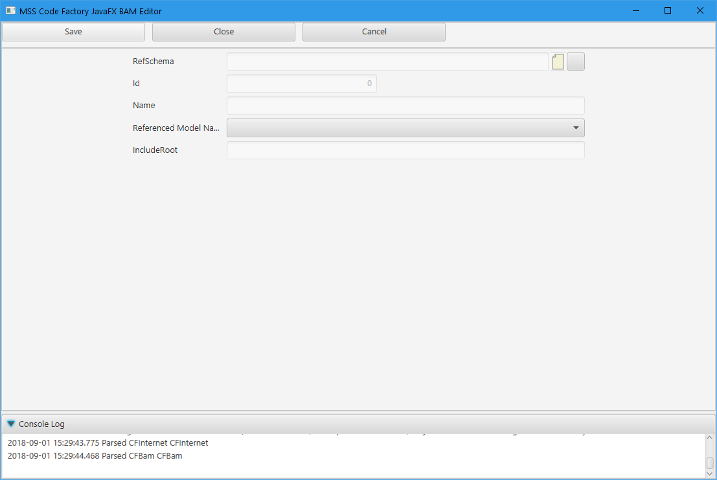
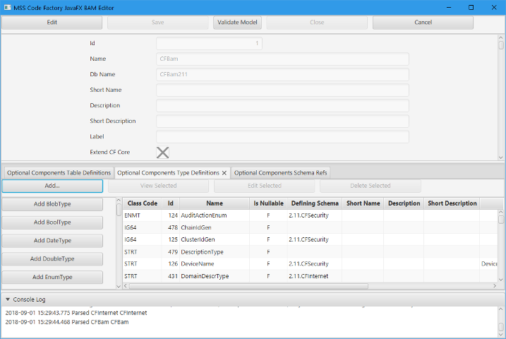

MSS Code Factory 2.11: Mark Stephen Sobkow's Code Factory
MSS Code Factory 2.11: Mark Stephen Sobkow's Code Factory
| Prev | Documentation Home | Next |
When you add a schema, you should specify a database name for your schema that is no more than eight characters for maximum portability. I like to include the version numbers of my project in the schema name so that I can install multiple versions of the models in the same database server. You aren't required to do so, however.
You must always specify a license for your schema -- its Embedded Text attribute is used to produce the headers for all of your files during the manufacturing process.
The copyright period is typically in the form YYYY or YYYY-YYYY if the project has existed for more than a year.
There is no requirement that the owner of a project be the domain under which it is published. For example, the MSS Code Factory 2 projects are all owned by Mark Sobkow, not SourceForge.net.

As soon as you are done creating and saving your schema, you need to add at least a reference to the 2.12 CFSec schema. You can add additional schema references as well if you are incorporating other model components in your application.
Be aware that if you incorporate a model through a schema reference, your application and license must be compliant with the license of that incorporated schema. Incorporating a schema reference is like including the code for that model; its license applies to all of the objects defined for it, regardless of what license you have selected for your application.
You do not get to ignore and relicense someone else's work according to your own wishes.
The only models which are delivered under the Apache V2 license for incorporation in any and all applications (including proprietary commercial ones) are the CFSec, CFInt, and CFCrm models. All other models delivered with MSS Code Factory 2 are under a dual GPLv3/Commercial license, and may only be used by GPLv3-compliant applications without a commercial license.

When you select "Add" in the schema types tab, you are presented with a complete list of all the types of data you can define for your schema, including the id generators. The details of the various type editors are presented in the next section of this documentation.
